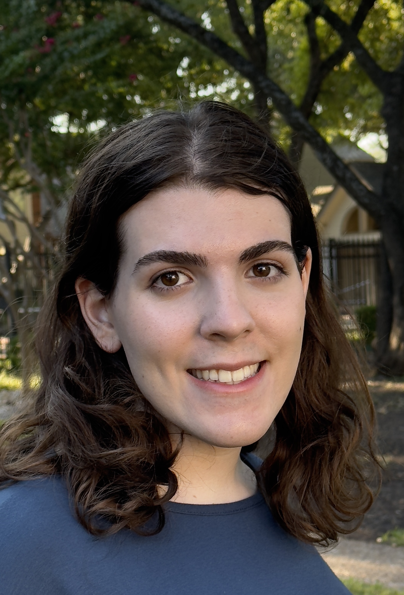

About Me
Hello everyone! My name is Danielle Raine, and I am an undergrad at UT Dallas studying Computer Science and Mathematics. I am passionate about learning new things in and out of my field while bringing positivity and total effort to my work and play! Pardon the state of the website! I'm still working on it.
I often dig deeper to learn why certain things work the way they do. To me, understanding a topic requires analyzing all of its moving parts, seen and unseen. I love using the knowledge that I find to help my peers and work on fun projects! I am looking for internship/research opportunities in mathematics, machine learning, software development, data science, and game development. My goal is to explore the cutting edge of technology as a researcher to help everyone live the life that makes them happy. ...that sounds very cliché. Remember to stay safe, make logical decisions, and drink a lot of water!
Projects!
(To maintain academic integrity, I cannot publicly share code for class projects)
- ManySnakes | Personal | June 2024 - Present
- Developing a game written in C using Simple DirectMedia Layer to be released on an online game platform. Utilizes a graphical interface and keyboard input and currently contains a main menu, a singleplayer mode, and a pause screen.
- DaniBookStats | Out in Tech x Samsung mentorship | March 2024 - May 2024
- Queried the Google Books API for ~1400 book entries with Requests in Python, storing each book's properties into a MariaDB table. Multiple plots depicting book summary statistics with data from the database were created with R. Evaluated and presented findings to show knowledge gained throughout the mentorship.
- Assignment 7: Word Count | Computer Architecture | April 2024
- Created a word count program in MIPS assembly that reads a file and records unique words, how many times they occur, and what line numbers they appear on in an ASCIIbetically sorted linked list and prints the result.
- Home-Hosted Modded Minecraft Server | Personal | December 2023 - January 2024
- Hosted a Minecraft server with Fabric mods using Ubuntu Server. Developed bash scripts to automate the startup and closing of the server at set hours in the day.
- Spider-man: Beyond the Spider-verse Ticket Reservation System | Computer Science 2 | November 2023
- Built a theater ticket management backend that utilizes a hashmap to store user information that users can log into, reserve, and manage seats in auditoriums represented with linked lists. Data is saved to text files. Written in C++.